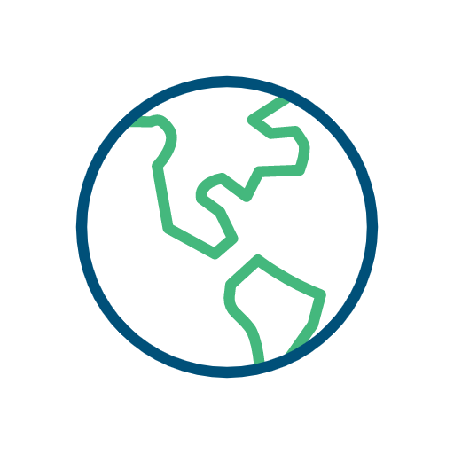
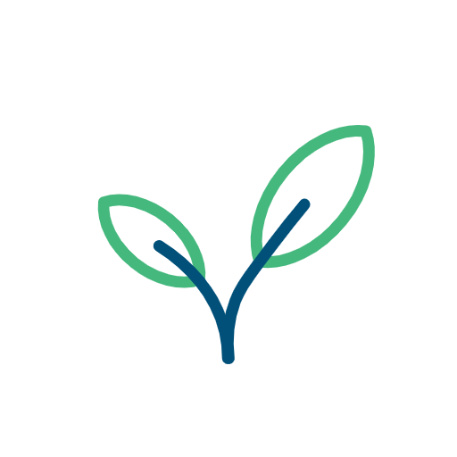
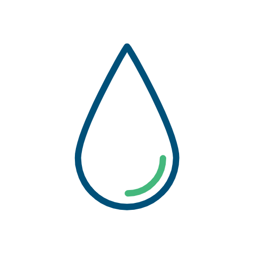

EcoPeace Middle East
EcoPeace Middle East Is A Unique Organization That Brings Together Jordanian, Palestinian And Israeli Environmentalists.
Our primary objective is the promotion of cooperative efforts to protect our shared environmental heritage. In so doing, we seek to advance both sustainable regional development and the creation of necessary conditions for lasting peace in our region. EcoPeace has offices in Amman, Ramallah, and Tel-Aviv.
Our Vision
A sustainable and prosperous Middle East



Regional Sustainable Water
Integration Management Security
Water is at the center of an environmental crisis in the Middle East. In the most water-scarce region on the planet, climate change and conflict have made a problematic situation even more desperate. Water can be a source of either conflict or collaboration. At EcoPeace, we believe real change is possible when we all work together. So we bring together Jordanians, Palestinians, and Israelis to create shared solutions, taking a bottom-up approach to educate local constituents, as well as a top-down approach to advance vital policies. The good news is that it’s working! Students are coming together across borders, leaders are taking action and real progress is being made.
LEARN MORE:
SOURCE: ECOPEACE